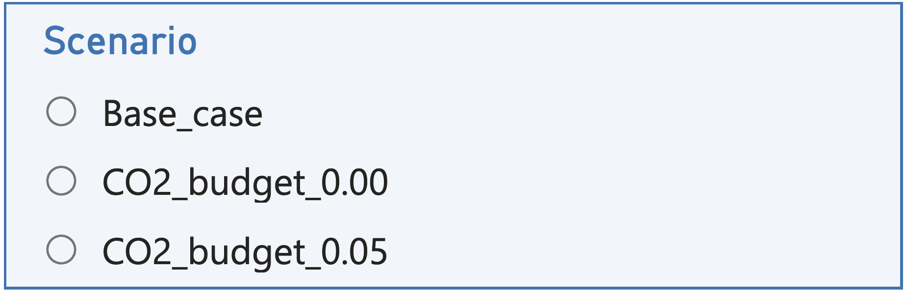
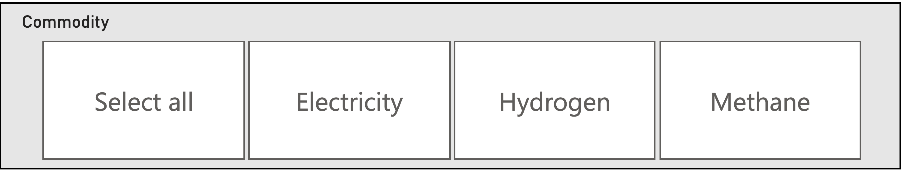
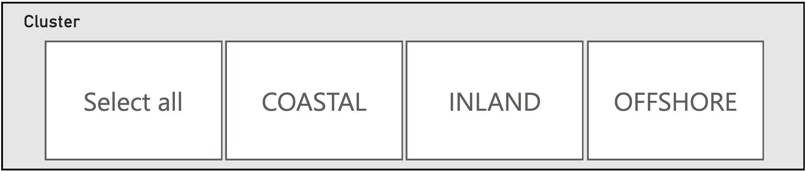
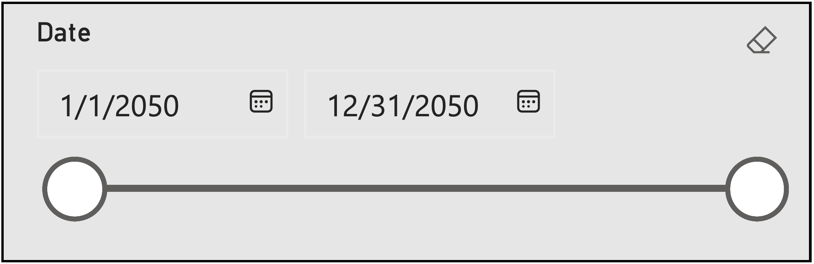
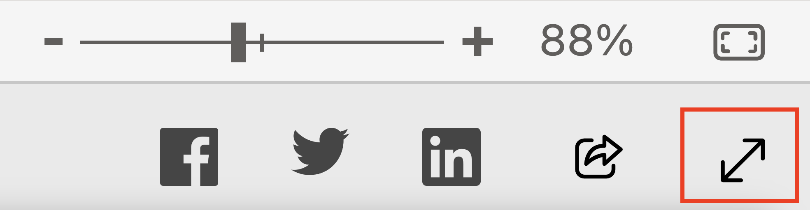
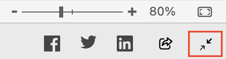
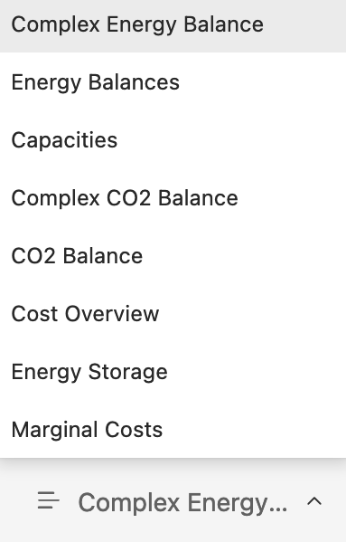

PowerBI usage
Each PowerBI screen shows a graph with selectors above it that allow you to drill down inside the data, and see summary results on the right side.
When the mouse stays on an item of the graph, a pop-up screen appears with some characteristics of that item. By clicking on a legend item, the related data is highlighted on the graph and the summary results on the right side reflect the selected legend item.
There are several selectors:
- Scenario (Interactive Results only) : select the scenario you want to analyse, together with the value of the parameter as explained in the Interactive Results section:

- Commodity: select Electricity, Hydrogen (including derivatives like ammonia and methanol), Methane or CO2 or all, depending on the graph; selected item(s) appear in black; no selection is equivalent to selecting “all”:

- Cluster: select INLAND, COASTAL, OFFSHORE, INTERCLUSTER (for grid capacities) or all, depending on the graph:

- Date: Zoom in the calendar year by moving the circles (default value: 1 January 2050 to 31 December 2050):

- Year/Month/Day/Hour view: the default view is “Month”; click on the left upper arrow to go up one level; click to the middle down arrow to go down one level:

This menu is displayed when hoovering over the graphics.
- Full screen mode: click on the “enlarge” icon in the bottom left corner to show the PowerBI screen in full screen:

click on

- Selection of Analysis (Interactive Results only): select the sought analysis by scrolling through the pages in the navigation bar at the bottom or by clicking left on the page number:
The analysis can also be selected using a dropdown menu by clicking on the page number:

The following analyses are presented in the Base Case section and in the Interactive Results section:
- Energy Balances: for the chosen commodity (electricity, methane, hydrogen), the quantities above the axis enter the energy system – production, imports, conversion (in), storage (in) –, while the quantities below the axis exit the energy system – consumption, exports, conversion (out), storage (out); quantities are in GWh (Low Heating Value for methane and hydrogen);
- Capacities: installed capacities (existing + new) for every technology, sorted in decreasing order; quantities are in GW of production and conversion capacity, in GWh for storage capacity and kt/h for CO2 capacity;
- CO2 Balance: the quantities above the axis show CO2 emissions, while the quantities below the axis show CO2 removals or compensations (e.g. biomethane); quantities are in ktCO2;
- Cost Overview: the left graph shows the total system cost per commodity, in M€/year; the left graph shows de cost by technology, in M€/year, in descending order; by selecting one commodity in the left graph, the right graph zooms on the technologies for the selected commodity;
- Energy Storage: quantity of commodity (filling level) over time for each storage technology; quantities are in GWh for energy commodities or kt for CO2;
- Marginal Costs: for each commodity and each hour, the marginal cost is calculated in €/MWh – this should reflect the market value; the CO2 value in €/tCO2 reflects the marginal abatement cost of CO2 emissions.